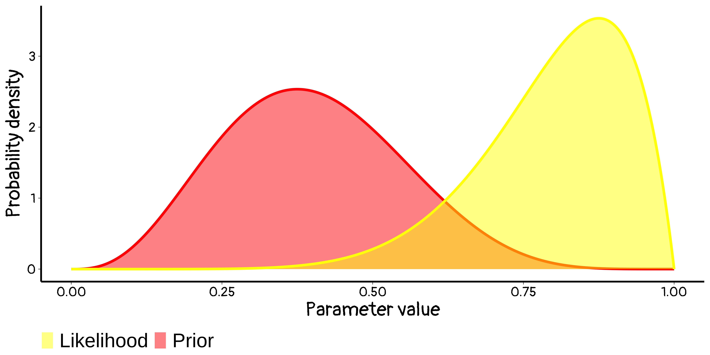
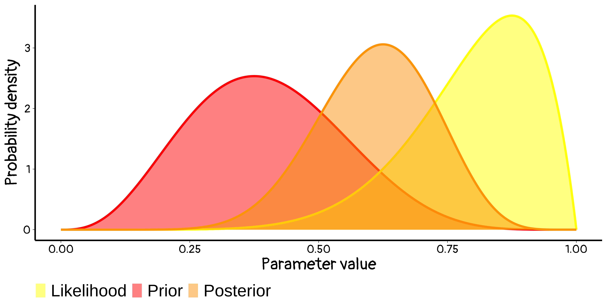
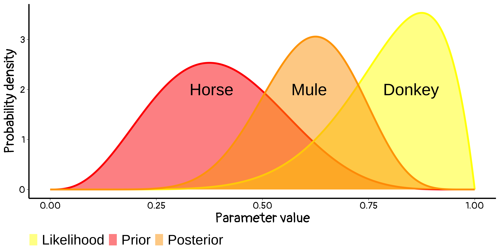
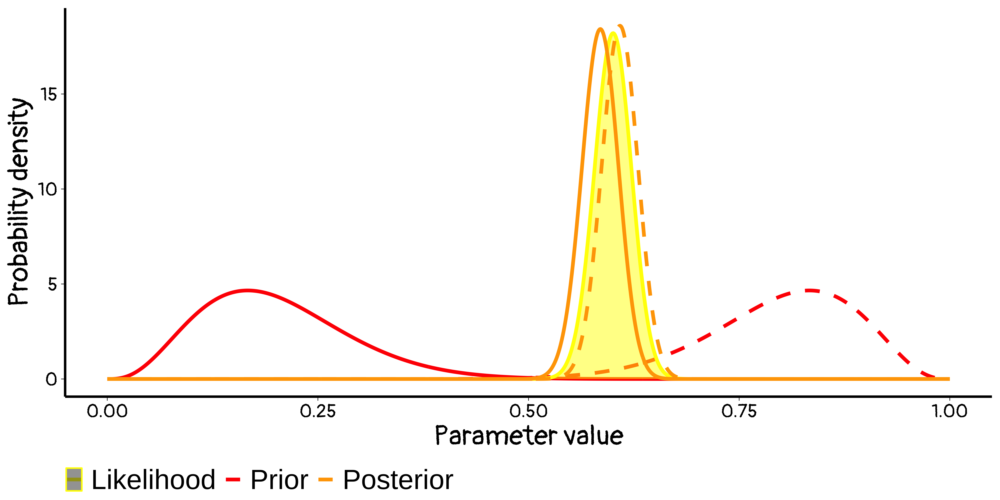
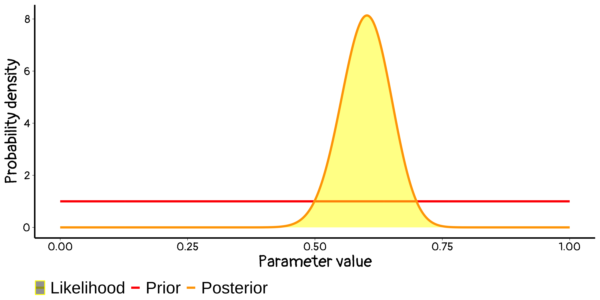
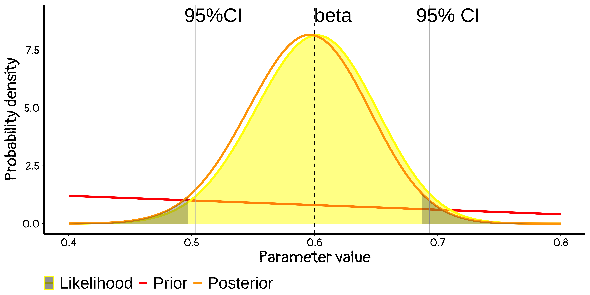
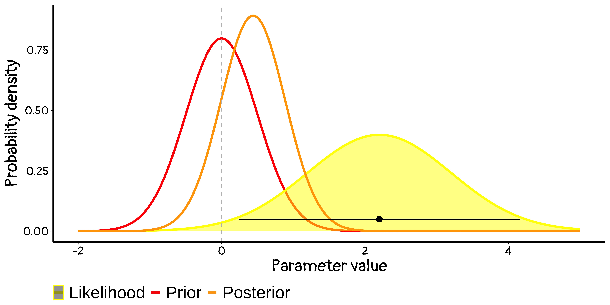

Introduction Bayesian statistics
Why make it simple when you could go Bayesian
BIO 8940
2025-01-08
Overview …
- For many years – until recently – Bayesian ideas in statistics were widely dismissed, often without much thought
- Advocates of Bayes had to fight hard to be heard, leading to an ‘us against the world’ mentality – & predictable backlash
- Today, debates tend be less acrimonious, and more tolerant
Bayes’ Theorem
Formal
Bayes’ theorem is the results in a conditional probability of two events:
\[ P[A|B] = \frac{P[A\ \&\ B]}{P[B]} = \frac{P[B|A] P[A]}{P[B]} \]
The conditional probability of A given B is the conditional probability ob B given A scaled by the relative probability of A compared to B.
\[ \underbrace{P[A|B]}_\text{posterior probability} = \frac{\overbrace{P[B|A]}^\text{likelihood} \cdot \overbrace{P[A]}^\text{prior probability}}{\underbrace{P[B]}_\text{marginal probability}} \]
Reframed for hypothesis
Bayes’ theorem can be seen as the conditonal probability of a hypothesis given the data: \[ P[H_0 | \text{data}] = \frac{\overbrace{P[\text{data}|H_0]}^\text{likelihood} \cdot \overbrace{P[H_0]}^\text{prior}}{P[data]} \]
Or it can be seen as \[ \underbrace{P[H_0 | \text{data}]}_{\text{what we want to know}} = \frac{\overbrace{P[\text{data}|H_0]}^\text{what frequentist do} \cdot \overbrace{P[H_0]}^\text{what we have a hard time understanding}}{\underbrace{P[data]}_\text{what we happily ignore}} \]
Bayesian inference
Error type and false positive/negative
Here we are counting number of observations in each case
| Reality | Reject H0 | Accept H0 | Total |
|---|---|---|---|
| H0 is true | a (Type I error) | b | a + b |
| H0 is false | c | d (type II error) | c + d |
| Total | a+c | b+d | N (number of obs) |
False positive \(P[H_0 \text{ true} | \text{Reject }H_0] = \frac{a}{a+c}\)
False negative: \(P[H_0\ false | Accept\ H_0] = \frac{d}{b+d}\)
Error type and false positive/negative
Same thing but with probabilities instead of number of observations
| Reality | Reject H0 \([\not H_0]\) | Accept H0 \([H_0]\) | Total |
|---|---|---|---|
| H0 true [H0+] | \(P[H_0^+| \not H_0] P[H_0^+]\) | \(P[H_0^+| H_0] P[H_0^+]\) | \(P[H_0^+]\) |
| H0 false [H0-] | \(P[H_0^-| \not H_0] P[H_0^-]\) | \(P[H_0^-| H_0] P[H_0^-]\) | \(P[H_0^-]\) |
| Total | \(P[\not H_0]\) | \(P[H_0]\) | 1 |
False positive \(P[H_0 \text{ true} | \text{Reject }H_0]\) \[ \begin{align} P[H_0^+ | \not H_0] &=\frac{P[\not H_0 | H_0^+ ] P[H_0^+ ]}{P[\not H_0]} \\ &= \frac{P[\not H_0 | H_0^+ ] P[H_0^+]} {P[\not H_0 | H_0^+] P[H_0^+ ] + P[ \not H_0 | H_0^- ] P[H_0^-]} \end{align} \]
Applied to Covid
Why does it matter? If 1% of a population have covid, for a screening test with 80% sensitivity (1- Type II) and 95% specificity (1-Type I).
Assuming N test = 100,
| Reality | Test +ve | Test -ve | Total |
|---|---|---|---|
| Healthy | |||
| Has COVID | |||
| Total | 100 |
Applied to Covid
Why does it matter? If 1% of a population have covid, for a screening test with 80% sensitivity (1- Type II) and 95% specificity (1-Type I).
Assuming N test = 100
| Reality | Test +ve | Test -ve | Total |
|---|---|---|---|
| Healthy | 99 | ||
| Has COVID | 1 | ||
| Total | 100 |
- Adding the prior
Applied to Covid
Why does it matter? If 1% of a population have covid, for a screening test with 80% sensitivity (1- Type II) and 95% specificity (1-Type I).
Assuming N test = 100
| Reality | Test +ve | Test -ve | Total |
|---|---|---|---|
| Healthy | 99 | ||
| Has COVID | 0.8 | 0.2 | 1 |
| Total | 100 |
- Adding the prior
- Adding the Type II error
Applied to Covid
Why does it matter? If 1% of a population have covid, for a screening test with 80% sensitivity (1- Type II) and 95% specificity (1-Type I).
Assuming N test = 100
| Reality | Test +ve | Test -ve | Total |
|---|---|---|---|
| Healthy | 4.95 | 94.05 | 99 |
| Has COVID | 0.8 | 0.2 | 1 |
| Total | 100 |
- Adding the prior
- Adding the Type II error
- Adding the Type I error
Applied to Covid
Why does it matter? If 1% of a population have covid, for a screening test with 80% sensitivity (1- Type II) and 95% specificity (1-Type I).
Assuming N test = 100
| Reality | Test +ve | Test -ve | Total |
|---|---|---|---|
| Healthy | 4.95 | 94.05 | 99 |
| Has COVID | 0.8 | 0.2 | 1 |
| Total | 5.75 | 94.25 | 100 |
- Adding the prior
- Adding the Type II error
- Adding the Type I error
- Adding colum sums
Applied to Covid
Why does it matter? If 1% of a population have covid, for a screening test with 80% sensitivity (1- Type II) and 95% specificity (1-Type I).
| Reality | Test +ve | Test -ve | Total |
|---|---|---|---|
| Healthy | 4.95 | 94.05 | 99 |
| Has COVID | 0.8 | 0.2 | 1 |
| Total | 5.75 | 94.25 | 100 |
- True positive: P[ Covid | test + ] = 0.139
- True negative: P[ Healthy | test - ] = 0.998
- False positive: P[ Healthy | test + ] = 0.861
- False negative: P[ Covid | test - ] = 0.002
What if COVID % changes?
Why does it matter? If 20% of a population have covid instead of 1%?
| Reality | Test +ve | Test -ve | Total |
|---|---|---|---|
| Healthy | 4 | 76 | 80 |
| Has COVID | 16 | 4 | 20 |
| Total | 20 | 80 | 100 |
- True positive: P[ Covid | test + ] = 0.8
- True negative: P[ Healthy | test - ] = 0.95
- False positive: P[ Healthy | test + ] = 0.2
- False negative: P[ Covid | test - ] = 0.05
Prosecutor’s fallacy
Mixing up P[ A | B ] with P[ B | A ] is the Prosecutor’s Fallacy
small P evidence given innocence \(\neq\) small P of innocence given evidence
True Story 
- After the sudden death of two baby sons, Sally Clark was sentenced to life in prison in 1999
- Expert witness Prof Roy Meadow had interpreted the small probability of two cot deaths as a small probability of Clark’s innocence
- After a long campaign, including refutation of Meadow’s statistics (among other errors), Clark was cleared in 2003
- After being freed, she developed alcoholism and died in 2007
Meeting mosquitoes

Bayes’ Theorem
Bayes’ Theorem is a rule about the ‘language’ of probabilities, that can be used in any analysis describing random variables, i.e. any data analysis.
Q. So why all the fuss?
A. Bayesian inference uses more than just Bayes’ Theorem
Bayesian inference uses the ‘language’ of probability to describe what is known about parameters.
Warning
Frequentist inference, e.g. using p-values & confidence intervals, does not quantify what is known about parameters. many people initially think it does; an important job for instructors of intro Stat/Biostat courses is convincing those people that they are wrong
Frequentist and Bayesian
A shooting cartoon
Adapted from Gonick & Smith, The Cartoon Guide to Statistics


95% of what?
- We ‘trap’ the truth with 95% confidence.
- 95% of what?
- The interval traps the truth in 95% of experiments.
To define anything frequentist, you have to imagine repeated experiments.
Let’s do some more ‘target practice’, for frequentist testing


Frequentist testing
- imagine running your experiment again and again, so
- On day 1 you collect data and construct a [valid] 95% confidence interval for a parameter \(\theta_1\).
- On day 2 you collect new data and construct a 95% confidence interval for an unrelated parameter \(\theta_2\).
- On day 3 … [the same]. and so on constructing confidence intervals each time
- … 95% of your intervals will trap the true parameter value
- … it does not says anything about whether your data is in the 95% or the 5%
- … it requires you to think about many other datasets, not just the one you have to analyze
How does Bayesian inference differ? Let’s take aim…


Here it is in practice
- Air France Flight 447 crashed in the ocean On June 1, 2009.
- Major wreckage recovered within 5 days. No blackbox


- Probability of blackbox location described via Bayesian inference


- Eventually, the black box was found in the red area
Bayesian inference
Updating knowledge
We use:
- Prior distribution: what you know about parameter β, excluding the information in the data – denoted \(P_{prior}(β)\)
- Likelihood: based on modeling assumptions, how [relatively] likely the data Y are if the truth is β - denoted \(f(Y|β)\)
To get a posterior distribution, denoted \(P_{post}(β|Y)\): stating what we know about β combining the prior with the data – ?
Bayes Theorem used for inference tells us:
\[ \begin{align} P_{post}(β|Y) &∝ f(Y|β) × P_{prior}(β)\\ \text{Posterior} &∝ \text{Likelihood} × \text{Prior} \end{align} \]
… and that’s it! (essentially!)
Updating knowledge
Updating knowledge
Updating knowledge
Updating knowledge
A Bayesian is one who, vaguely expecting a horse, and catching a glimpse of a donkey, strongly believes he has seen a mule
Where do priors come from
Priors come from all data external to the current study (i.e. everything else) ‘Boiling down’ what subject-matter experts know/think is known as eliciting a prior. It’s not easy but here are some simple tips
- Discuss parameters experts understand – e.g. code variables so intercept is mean outcome in people with average covariates, not with age = height = … = 0
- Avoid leading questions (just as in survey design)
- The ‘language’ of probability is unfamiliar, help users express their uncertainty
Where do priors come from
Use stickers or a survey in the hallway

Use stickers (Johnson et al 2010, J Clin Epi) for survival when taking warfarin

Normalize marks (Latthe et al 2005, J Obs Gync) for pain effect of LUNA vs placebo
Where do priors come from
If the experts disagree? Try it both ways
If the posteriors differ, what you believe based on the data depends on your prior knowledge
To convince other people, expect to have to convince skeptics – and note that convincing [rational] skeptics is what science is all about
When priors don’t matter (much)?
Very informative data
When the data provide a lot more information than the prior
Priors here are dominated by the likelihood, and they give very similar posteriors – i.e. everyone agrees. (Phew!)
Flat priors
Using very flat priors to represent ignorance
Flat priors do NOT actually represent ignorance!
Bayesian \(\approx\) frequentist
Likelihood gives the classic 95% confidence interval can be good approx of Bayesian 95% Highest Posterior Density interval
Bayesian \(\approx\) frequentist
With large samples (and some regularity conditions)
(sane) frequentist confidence intervals and (sane) Bayesian credible intervals are essentially identical
it’s actually okay to give Bayesian interpretations to 95% CIs, i.e. to say we have \(\neq\) 95% posterior belief that the true β lies within that range
Frequentist 😃 & Bayesian 😕
Prior strongly supporting small effects, and with data from an imprecise study

Where is Bayesian approach used
Almost any analysis
Bayesian arguments are often seen in
Hierarchical modeling (Some expert calls the classic frequentist version a “statistical no-man’s land”)
Complex models: for messy data, measurement error, multiple sources of data fitting them is possible under Bayesian approaches, but perhaps still not easy
Summary
Bayesian statistics:
I barely scratched the surface
Is useful in many settings, and you should know about it
Is often not very different in practice from frequentist statistics. It is often helpful to think about analyses from both Bayesian and non-Bayesian points of view
Is not reserved for hard-core mathematicians, or computer scientists, or philosophers. If you find it helpful, use it.
Happy modelling

BIO 8940